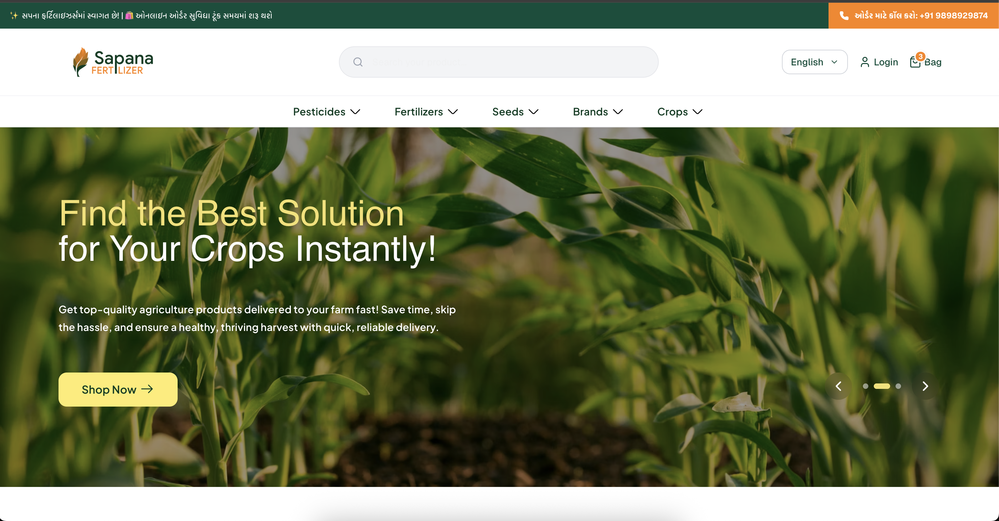

About Me
I am an AWS Serverless Developer specializing in building scalable, event-driven backend systems using different AWS services. My expertise lies in designing distributed architectures, integrating complex workflows, and developing reliable microservices that support high-volume applications.I also hold an AWS Certified Cloud Practitioner certification, which provides me with a strong understanding of core AWS services, cloud architecture fundamentals, and best practices for building secure, cost-efficient, and scalable applications.
I have hands-on experience developing production-grade features such as multi-step order processing, intelligent payment routing, real-time WebSocket updates, and secure API-driven systems. My work focuses heavily on system reliability, observability, and cost-efficient, serverless-first design principles.
With a background in mobile development, I bring a strong understanding of client–server communication and end-to-end product thinking. Today, I focus primarily on AWS backend engineering, solving complex workflow, orchestration, and payment challenges through clean architecture and cloud-native design.
Project : Agri-Tech E-Commerce Platform
Agri-Tech E-Commerce Platform Overview
- Farmers in rural regions face limited access to quality agricultural supplies, long travel times, and unreliable local availability.
- The project is a smart, serverless, AI-powered platform that transforms how farmers discover, purchase, and learn about essential farming products.
- Farmers can browse trusted fertilizers and pesticides online, get personalized AI recommendations based on crop needs, and track orders in real time.
- The system runs on a fully serverless AWS architecture using: API Gateway, AWS Lambda Step Functions, RDS, S3, Cognito.
- Provides lightning-fast performance, automated workflows, and real-time notifications.
- Supports intelligent product discovery and reliable "Cash on Delivery" options.
- Empowers farmers, supports local businesses, and brings modern digital solutions to underserved communities.
- Functions as an end-to-end ecosystem designed to uplift rural agriculture through innovation.
Tools & technology Overview:
- Backend Languages & Frameworks: Python (FastAPI, SQLAlchemy, Pydantic, Boto3)
- Cloud Platform (AWS): API Gateway, API Websocket Gateway, Step Function, Lambda, RDS (MySQL), S3, CloudWatch, IAM, Cognito
- Databases: MySQL
- DevOps & IaC: Git, GitHub Actions, Terraform
- Collaboration & PM Tools: Figma, JIRA, Postman
Planning & Design
Diagrams & Planning:


UI/UX & Documentation:
In the planning and design phase, we focused on establishing a clear technical foundation through detailed SRS documentation, AWS architecture diagrams, and UI/UX collaboration. This preparation ensured smooth coordination between teams and well-defined backend–frontend integration.
- Figma Collaboration: Reviewed UI/UX wireframes and mockups to align API design with user interface requirements.
- JIRA Task Management: Supports agile project management, including task breakdown, sprint planning, progress tracking, and issue resolution.
- Architecture Planning: Developed high-level system architecture diagrams, Entity-Relationship Diagrams (ERDs), and data flow diagrams.
- API Specification: Defined detailed API endpoints and data models (e.g., using OpenAPI/Swagger principles) to ensure clear contracts.
- Initial Scope Definition: Collaborated on defining project scope and breaking down features into manageable sprints.
Cloud Architecture
Cloud Architecture video and image:

The backend follows a serverless, microservices-based architecture on AWS to ensure high scalability, low cost, and secure operations. All client requests flow through API Gateway, which connects to modular Lambda services responsible for different parts of the system.
- AWS API Gateway: Manages all API endpoints, request routing, authentication, and separate APIs for each microservice
- AWS Lambda: Executes all backend business logic in a fully serverless environments - product management, order processing, payment updates.
- AWS API Gateway (WebSocket): Enables real-time, bidirectional communication for instant order status and payment updates to the frontend.
- AWS Step Functions: Orchestrates multi-step workflows like order creation, apply promotions and payment flow.
- AWS Cognito: Provides secure authentication, user management, and token-based access for APIs without managing servers manually.
- AWS RDS (MySQL): Stores structured and transactional data such as products, orders, users, and payments in a fully managed relational database.
- AWS S3: Stores product images, invoices, and static files with secure access control.
- AWS IAM: Enforces fine-grained permissions across AWS services to ensure secure internal communication.
- AWS CloudWatch: Provides centralized logging, error alerts, metrics, and performance monitoring for all Lambda functions and workflows.
CI/CD & Infrastructure Management
GitHub Actions Workflows:


Terraform Configuration:


Automated deployment strategies ensure rapid and reliable delivery of new features and updates. I've implemented a Continuous Integration/Continuous Deployment (CI/CD) pipeline using GitHub Actions and managed infrastructure with Terraform.
- GitHub Actions: Orchestrates the CI/CD pipeline, automating build, test, and deployment processes.
- CI/CD Pipeline: Ensures code quality through automated testing and enables quick, consistent deployments to AWS environments.
- Terraform: Used for Infrastructure as Code (IaC) to provision and manage AWS resources, ensuring reproducibility and version control.
- Benefits: Reduced manual errors, faster release cycles, consistent environment provisioning.
Backend Development
Code Snippets:


The backend is built using Python and modern development practices to ensure high performance, scalability, and maintainable code. FastAPI powers the REST APIs, while SQLAlchemy provides efficient ORM capabilities for MySQL. The architecture emphasizes clean coding, modular design, and asynchronous processing to support a production-ready environment.
- Python: Core development language for all backend services.
- FastAPI: Framework for building high-performance, asynchronous REST APIs with automatic validation using Pydantic.
- SQLAlchemy: ORM layer enabling structured, efficient, and secure interactions with AWS RDS (MySQL).
- Object-Oriented Programming (OOPS): Ensures reusable, scalable, and clear code organization across services.
- Unit Testing (pytest): Implemented for validation of service logic, API responses, and database operations.
- Async/Await: Enables non-blocking I/O, improving throughput and API responsiveness.
- Boto3 Integration: Used for interacting with AWS services such as S3, Cognito, and Step Functions.
- Environment-based Configurations: Managed using separate dev/stage/prod configurations to support deployment pipelines.
Monitoring & Observability
CloudWatch Logs:


CloudWatch Dashboard & Insights:


Robust monitoring and observability practices ensure the backend remains reliable, performant, and easy to troubleshoot. AWS CloudWatch is integrated across all backend services to capture logs, track system health, and alert the team about potential issues before it impact users.
- CloudWatch Logs: Centralized logging for all Lambda functions, FastAPI services, and database interactions, enabling efficient debugging and traceability.
- Custom Metrics: Application-specific KPIs (e.g., order flow duration, payment success rates, API latency) are published to CloudWatch for deeper operational insights.
- Alarms and Notifications: CloudWatch Alarms are configured to detect anomalies—such as increased error rates or slow Lambda execution—and send alerts via Amazon SNS.
- CloudWatch Dashboards: Real-time dashboards visualize API performance, Lambda invocation patterns, database usage, and system health in a single unified view.
- Structured Logging: JSON-formatted logs used for easier searching, filtering, and correlation during issue investigation.
My Contribution
I led the development of the Payment Service, tightly integrated with the platform’s multi-step order workflow. The system ensures seamless order placement, intelligent payment-provider selection, secure payment processing, and real-time updates for users.
Step Function Workflow
The checkout process is orchestrated with AWS Step Functions and consists of three main stages:
- Order Creation — Validates cart details and creates order records in RDS.
- Promotion Application — Applies discount rules and updates order totals.
- Payment Processing (My Focus) — Selects the best payment provider, processes payments via Razorpay, and handles success/failure flows.
Payment Processing & Integration
- Integrated Razorpay SDK for payment creation, signature verification, and webhook-driven updates.
- Implemented API Gateway (REST & WebSocket) to deliver real-time payment status updates to the frontend.
- Developed Lambdas in VPC for secure RDS access and Non-VPC Lambdas for low-latency external API interactions.
- Designed idempotent, fault-tolerant payment logic with retries, exponential backoff, and structured error handling.
Authentication & Security
- Used AWS Cognito for user authentication, user pools, and token-based API access.
- Configured secure AWS IAM roles and least-privilege policies for Lambdas, Step Functions, and API Gateway.
Observability & Monitoring
- Integrated CloudWatch Logs and metrics to capture Lambda and Step Function executions for end-to-end visibility.
- Configured alarms and notifications for payment failures, workflow errors, and high-latency operations.
Infrastructure & Deployment
- Provisioned Step Functions, Lambda, API Gateway, RDS, and S3 using Terraform.
- Implemented CI/CD pipelines with GitHub Actions to automate tests and deployments across environments.
Impact & Outcomes
- Enabled reliable, real-time payment processing across the platform.
- Reduced payment failures, improved order reliability, and enhanced customer experience.
- Delivered a scalable, secure, and maintainable payment architecture ready to onboard additional providers.
Get In Touch
I'm always open to discussing new projects, collaborations, or job opportunities. Feel free to reach out!
- Email: mdhruvim@gmail.com